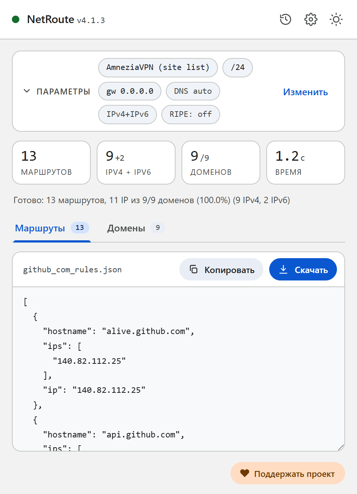
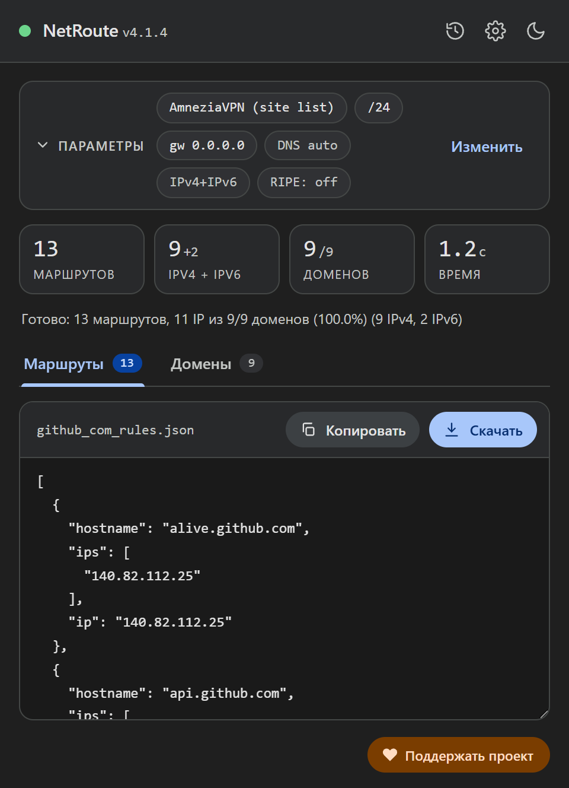

Список сайтов AmneziaVPN из любого сайта
AmneziaVPN умеет пускать через VPN только адреса из списка — это «раздельное туннелирование сайтов». Список состоит из IPv4-адресов и подсетей, и собрать его вручную для сайта с десятками доменов долго. NetRoute делает это со страницы: открыли сайт, нажали «Анализировать сайт», скачали файл для импорта.
Что внутри файла
Файл — JSON-массив записей в том виде, в каком AmneziaVPN сама экспортирует свой список: у каждой записи есть hostname, список адресов ips и первый из них в ip — для старых версий приложения.
[
{ "hostname": "api.github.com", "ips": ["140.82.112.4"], "ip": "140.82.112.4" },
{ "hostname": "github.com", "ips": ["140.82.112.3"], "ip": "140.82.112.3" },
{ "hostname": "140.82.112.0/20", "ips": [], "ip": "" },
{ "hostname": "185.199.108.0/22", "ips": [], "ip": "" }
]- Хосты с адресами. По исходникам клиента при импорте AmneziaVPN не разрешает имена — записи сохраняются как есть, а резолв делается только при ручном добавлении сайта. Поэтому NetRoute пишет каждому хосту его IPv4-адреса, найденные при скане; хосты без IPv4-адресов в файл не попадают. Имена не сворачиваются:
www.ozon.ruиozon.ru— разные записи с разными адресами. - Подсети. После хостов идут агрегированные IPv4-сети — те же, что NetRoute выдаёт маршрутами для роутера; с режимом Оптимизация маршрутов → BGP Prefix это анонсируемые префиксы провайдера, а не отдельные адреса.
- Только IPv4. По документации AmneziaVPN IPv6 не поддерживает; IPv6-адреса в файл не пишутся.


Что понадобится
- Приложение AmneziaVPN с настроенным подключением. По документации раздельное туннелирование по адресам недоступно в Amnezia Free
- Платформа с туннелированием по адресам: по документации iOS, macOS и Linux поддерживают только его, Windows и Android — и по адресам, и по приложениям
- Расширение NetRoute в Chrome
Шаг 1. Сгенерируйте список в NetRoute
- Откройте нужный сайт в Chrome и обновите страницу, чтобы сниффер расширения увидел фоновые запросы
- Запустите NetRoute
- В списке Целевая ОС выберите AmneziaVPN (site list) — группа «VPN-клиенты»
- Поля IP шлюза и Интерфейс на этот формат не влияют
- Нажмите Анализировать сайт
- На вкладке Домены снимите галочки с лишнего — счётчики, рекламные сети, чужие CDN; список пересчитается сразу
- Нажмите Скачать: файл называется по сайту, например
github_com_rules.json
Шаг 2. Импортируйте файл в AmneziaVPN
По документации AmneziaVPN импорт списка делается из параметров раздельного туннелирования сайтов:
- Откройте Раздельное туннелирование и перейдите в Параметры раздельного туннелирования сайтов
- Нажмите значок ⋮ и выберите импорт: Заменить список с сайтами — если начинаете с чистого листа, или Добавить импортированные сайты к существующим — если дополняете
- Укажите скачанный файл; записи появятся в списке
Шаг 3. Включите режим и подключитесь
- Выберите режим Только адреса из списка должны открываться через VPN — через туннель пойдут только сайты из файла, остальной трафик напрямую. Второй режим, Адреса из списка не должны открываться через VPN, делает наоборот: исключает список из туннеля
- Включите раздельное туннелирование сайтов
- Подключитесь к VPN
Шаг 4. Проверьте
Откройте сайт, для которого собирали список: он должен открываться через VPN, а сайты вне списка — напрямую. Если сайт открывается не до конца — часть его доменов не попала в список: проверьте вкладку Домены в NetRoute, пройдитесь по сайту перед сканом (войдите в аккаунт, откройте видео), чтобы сниффер увидел отложенные запросы, и импортируйте файл заново с заменой.
Частые проблемы
Файл не импортируется
По исходникам клиента файл должен быть JSON-массивом объектов; обычный массив строк не принимается. Файл NetRoute уже в нужной форме — проверьте, что он скачан полностью и не отредактирован в текстовом редакторе с заменой кавычек.
Сайт работал, потом перестал
Адреса у сайта сменились. Пересоберите файл в NetRoute — с включённым режимом BGP Prefix в него попадут подсети, а не отдельные адреса — и импортируйте с заменой списка.
Через VPN пошло лишнее
Документация AmneziaVPN предупреждает: широкие подсети крупных сервисов могут захватить посторонний трафик. Снимите в NetRoute галочки с чужих CDN на вкладке Домены или выключите BGP-оптимизацию для таких сайтов.
Пропало подключение к своему серверу
По документации, если адрес вашего VPN-сервера попал в одну из добавленных подсетей, подключение ломается — удалите эту подсеть из списка.
Несколько сайтов в одном списке
Нажмите URL list рядом с кнопкой анализа и вставьте список сайтов — NetRoute соберёт один файл на всех, он будет называться bulk_N_rules.json.
DNS и утечки
Раздельное туннелирование AmneziaVPN работает по адресам: в туннель уходит трафик к адресам из списка, а DNS-запросы браузера идут туда, куда настроен его резолвер. Если это резолвер провайдера, он видит имена сайтов, даже когда сам трафик идёт через VPN. В Chrome отключите «Использовать безопасный DNS» или укажите в нём резолвер, которому доверяете; настройки DNS самого AmneziaVPN смотрите в его документации.
Проверка: dnsleaktest.com при подключённом VPN покажет, чей резолвер отвечает на ваши запросы.
Пример конфигурационного файла
Готовый шаблон. Замените примеры доменов и сетей выводом NetRoute для ваших сайтов.
amnezia-sites.json— список для импорта в AmneziaVPN: хосты с адресами и подсети
[
{
"hostname": "api.github.com",
"ips": [
"140.82.112.4"
],
"ip": "140.82.112.4"
},
{
"hostname": "avatars.githubusercontent.com",
"ips": [
"185.199.108.133"
],
"ip": "185.199.108.133"
},
{
"hostname": "github.com",
"ips": [
"140.82.112.3"
],
"ip": "140.82.112.3"
},
{
"hostname": "github.githubassets.com",
"ips": [
"185.199.108.154"
],
"ip": "185.199.108.154"
},
{
"hostname": "140.82.112.0/20",
"ips": [],
"ip": ""
},
{
"hostname": "185.199.108.0/22",
"ips": [],
"ip": ""
}
]
Подсказка: текстовые форматы скачиваются с шапкой-комментарием. Снимите галочку «Включать комментарии в экспортируемые файлы» в настройках NetRoute, чтобы получить только правила; JSON-форматы комментариев не содержат.
Все примеры конфигов на GitHub →
Официальная документация
- AmneziaVPN: раздельное туннелирование — режимы, импорт, ограничения (ru)
- AmneziaVPN: исходный код клиента — формат импорта в ipSplitTunnelingController (en)
- Amnezia: что такое split tunneling (en)
Похожие инструкции
- Keenetic — маршруты из BAT-файла
- MikroTik — импорт
.rsc-скрипта в RouterOS - WireGuard — split tunneling через
AllowedIPs - Linux —
ip routeчерез shell-скрипт - OpenVPN — директивы
routeв клиентском конфиге - sing-box / Hiddify — rule-set для sing-box и Hiddify
- Xray / 3X-UI / v2rayN — правила routing.rules для Xray-core, 3X-UI и v2rayN
- Happ — профиль маршрутизации ссылкой happ://routing
Готовы попробовать?
NetRoute — бесплатное расширение Chrome для генерации маршрутов из любого сайта.
Установить расширение